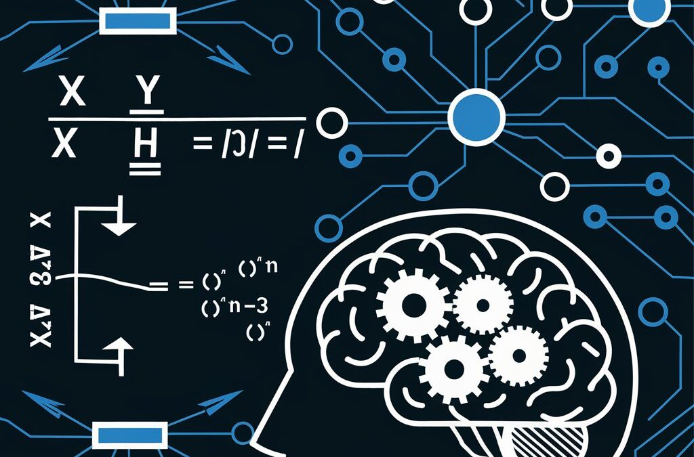

Artificial Intelligence (AI) refers to the simulation of human intelligence processes by machines, especially computer systems, to perform tasks that typically require human intellect. These tasks can include learning, reasoning, problem-solving, understanding natural language, and even perception and action.
Key Capabilities of AI
-
Learn from Data (Machine Learning):
Machine Learning (ML) is a subset of AI that enables systems to learn and improve from experience without being explicitly programmed. Through training on large datasets, ML algorithms identify patterns and relationships in data to make predictions or decisions. For example:
- A machine learning model can analyze thousands of customer reviews to determine whether a review is positive or negative (sentiment analysis).
Example Applications: Email spam detection, recommendation systems like Netflix or Amazon, and predictive maintenance in industries.
-
Make Decisions (Deep Learning):
Deep Learning (DL) is a specialized form of ML that uses artificial neural networks inspired by the structure and function of the human brain. It is particularly effective for complex decision-making and feature extraction from unstructured data such as images, videos, and text.
How It Works: DL models like Convolutional Neural Networks (CNNs) and Recurrent Neural Networks (RNNs) process raw data and learn hierarchical representations, enabling the system to make highly accurate decisions.
Example Applications: Autonomous vehicles (decision-making for navigation), fraud detection in banking, and medical image diagnosis.
-
Understand Human Language (Natural Language Processing):
Natural Language Processing (NLP) focuses on enabling machines to understand, interpret, and generate human language. It bridges the gap between human communication and machine understanding.
How It Works: NLP techniques, such as tokenization, sentiment analysis, and named entity recognition (NER), allow systems to process and analyze text or speech data. Advanced models like GPT (Generative Pre-trained Transformers) use massive datasets to generate coherent and context-aware responses.
Example Applications: Chatbots, virtual assistants (e.g., Alexa, Siri), real-time language translation tools, and sentiment analysis of social media data.
-
Recognize Objects and Patterns (Computer Vision):
Computer Vision (CV) is the ability of machines to interpret and make sense of visual information from the world, such as images and videos.
How It Works: Using methods like image processing, object detection, and pattern recognition, CV systems analyze pixel data to identify objects, track movements, and even interpret gestures.
Example Applications: Facial recognition systems, medical image analysis (e.g., detecting tumors in X-rays), and surveillance systems for tracking and identifying suspicious activities.
Characteristics of AI
- Adaptability: Learn and adjust to new data or environments without human intervention.
- Automation: Perform repetitive tasks with precision, reducing human workload.
- Context Understanding: Analyze not just raw data but also its context, enabling accurate and relevant responses.
- Human-Like Tasks: Mimic cognitive functions such as vision, speech, and decision-making.
- Scalability: Handle vast amounts of data and perform at a scale far beyond human capabilities.
Types of AI
- Narrow AI (Weak AI): Focused on specific tasks and operates within a predefined scope. Example: Virtual assistants like Siri or recommendation systems like Spotify.
- General AI (Strong AI): Hypothetical AI that can perform any intellectual task a human can do. It would possess human-like reasoning and decision-making capabilities. Example: Still in the realm of research and speculation.
- Superintelligent AI: AI that surpasses human intelligence in all fields, including creativity, problem-solving, and emotional intelligence. Example: Theoretical and often discussed in terms of ethical implications.
Importance of AI in Modern Society
Artificial Intelligence plays a pivotal role in transforming industries and improving lives:
- Healthcare: AI-powered diagnostic tools, personalized treatment plans, and drug discovery.
- Transportation: Autonomous vehicles, traffic management systems, and predictive maintenance.
- Finance: Fraud detection, algorithmic trading, and personalized financial advice.
- Education: Adaptive learning systems, AI tutors, and administrative automation.
- Retail: Customer behavior analytics, inventory management, and chatbot-based customer service.
AI is revolutionizing every aspect of human life, enabling tasks that were once considered science fiction to become part of our everyday reality.
What is Artificial Intelligence?
Artificial Intelligence refers to the ability of machines to mimic human intelligence. AI systems can:
- Learn from data (Machine Learning)
- Make decisions (Deep Learning)
- Understand human language (Natural Language Processing)
- Recognize objects and patterns (Computer Vision)
Can AI Exist Without Math?
AI, in its most basic form, could exist without the rigorous math underpinning modern models. Early AI systems, such as rule-based systems, relied more on pre-defined logic than mathematical optimization. However, these systems are highly limited in scalability, learning, and functionality.
Why is Math Important for AI?
Mathematics forms the backbone of AI, providing tools like linear algebra, calculus, and probability to build efficient algorithms. For example:
- Optimization: Calculus enables models to minimize errors using gradient descent.
- Probabilistic Reasoning: Probability handles uncertainty in decision-making.
- Data Representation: Linear algebra helps encode data as vectors and matrices.
A neural network, a fundamental AI model, relies heavily on linear algebra:
y = w_1x_1 + w_2x_2 + b
Conclusion
AI without math would strip away the intelligence from artificial intelligence, leaving us with rigid, inflexible systems incapable of learning or adaptation. Mathematics is not just a tool for AI—it is the foundation upon which it thrives.